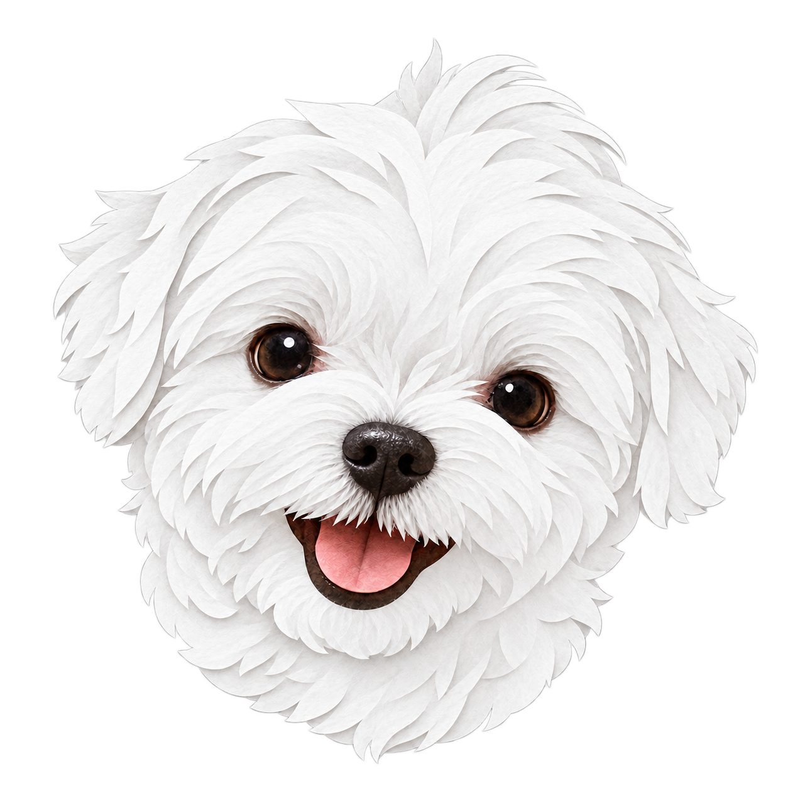

Happy Milky
귀까지 하얗게 다듬은 얼굴 심볼. 작은 아이콘에 잘 어울립니다.
A는 하얀 귀로, B와 C는 더 하얀 종이의 겹으로.
세 가지 모두 함께 사용해 주세요.

귀까지 하얗게 다듬은 얼굴 심볼. 작은 아이콘에 잘 어울립니다.

더 하얀 털과 부드러운 종이의 겹. 웃는 얼굴과 짧은 귀를 그대로 살렸습니다.

밝고 하얀 털로 반겨주는 밀키. 말린 꼬리와 앞발을 든 모습을 담았습니다.
이전 버전은 덮어쓰지 않고 별도 파일로 보관했습니다.